Lambda คือบริการของ Amazon ช่วยเรื่องการคิดคำนวณ ในรูปแบบ function ในการทดสอบใช้ lambda เราจะทำ function ที่ทำงานร่วมกับ S3 เมื่อ upload รูปไปที่ S3 bucket full-size-img แล้วให้ทำการลดขนาดรูปภาพลงแล้วไป upload อีก bucket ชื่อ thumb-nail-preview ในขั้นตอนแรกให้เรา create bucket ที่ต้องการจะใช้มา 2 bucket ก่อนขั้นตอน create bucket S3 ดูได้จาก ด้านบน ต่อมาให้ create policies หรือขอบเขตการใช้ก่อน ซึ่งหลักๆเราจะใช้ Cloud Watch และ S3 ให้สร้างดังนี้
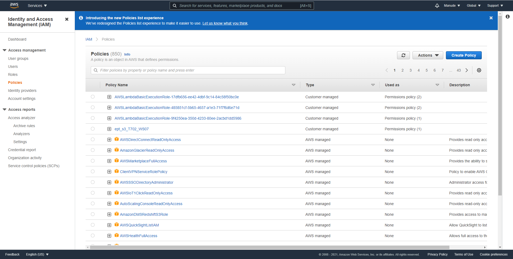เลือก service->IAM->policies และคลิ๊กที่ create policy เลือก Json และพิมพ์ตาม code ด้านล่าง ส่วนในกรอบสีแดงคือชื่อ bucket ทั้ง 2 ของเรา
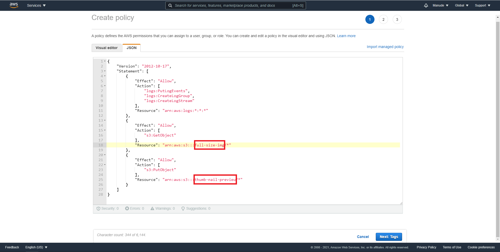กด next ไปเรื่อยๆจนกระทั่งถึงหน้าตั้งชื่อ policy ที่เรา create ให้เราตั้งชื่อตามที่ต้องการและคลิ๊ก create ได้เลย
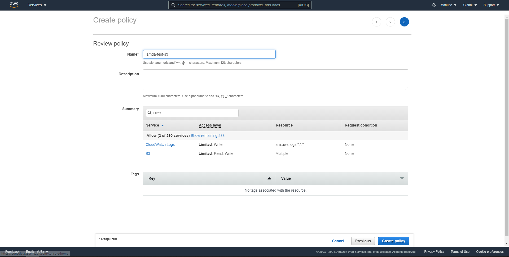ต่อมาให้กลับมาที่ IAM และเลือกที่ Role->Create Role ดังรูปด้านล่าง
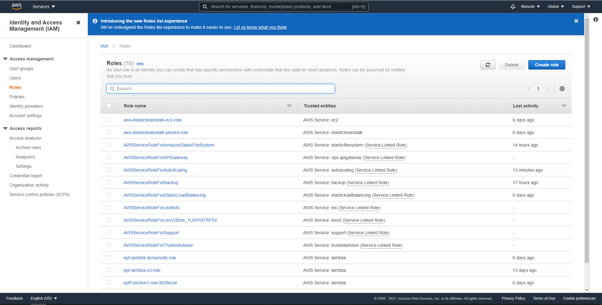เลือก common uses case เป็น Lambda แล้วกด next permission
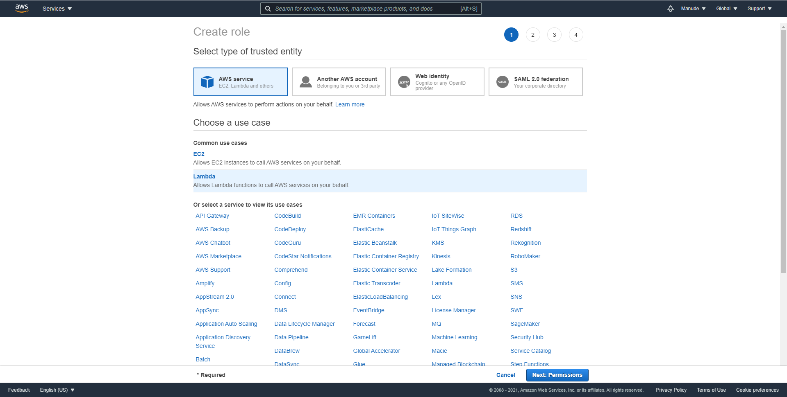ต่อมาเลือก policy ที่เราพึ่ง create ขึ้นมากด next เรื่อยๆจนกระทั่งถึงหน้าตั้งชื่อ role ตั้งชื่อตามต้องการเสร็จแล้วกด create role
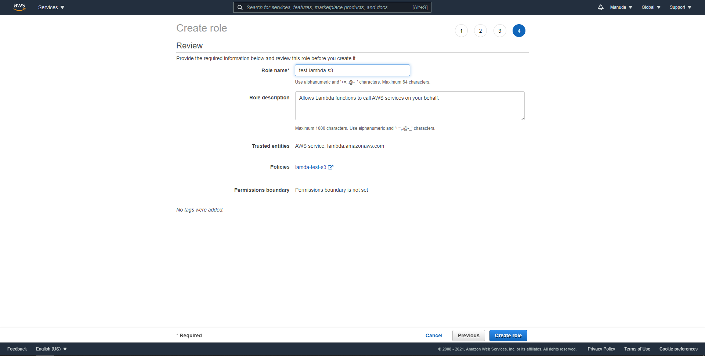เมื่อเสร็จแล้วให้เริ่ม create lambda function โดยเลือก Lambda->Function->Create Function ตั้งชื่อ function เลือก runtime เป็น Node.js 14x เลือก Using existing role สร้างไว้กด create function เมื่อสร้างเสร็จให้ไปที่ function เลือก Lambda->Function->ชื่อ function ที่สร้าง ->Edit basic setting แล้วตั้งค่าตามรูปด้านล่างเสร็จแล้วกด save
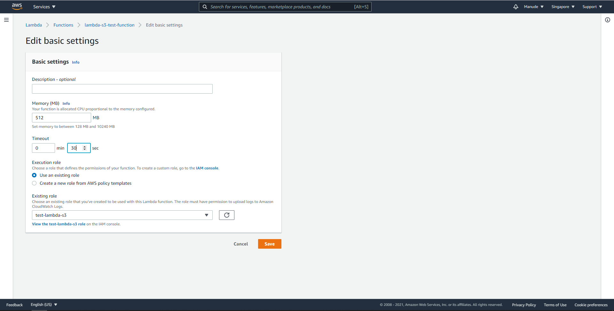ต่อมาให้สร้าง User admin ขึ้นมา ไปที่ IAM -> User -> Add user ให้ create group ขึ้นมาเลือก administrator full access เลือก create group จากนั้นเลือก next จนกระทั้งเสร็จ ให้ copy key เก็บเอาไว้
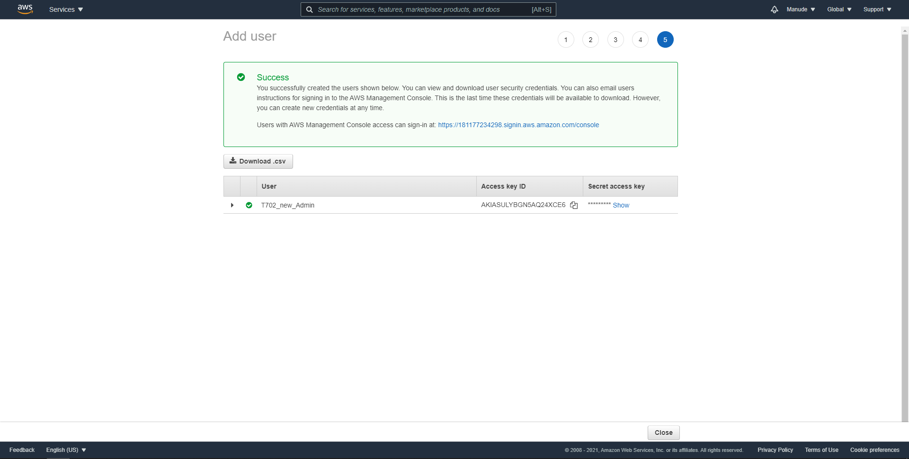เสร็จแล้วให้ download awsliv2.msi ซึ่งเป็นโปรแกรมที่ทำให้ใช้งาน Amazon ผ่าน cmd ได้เมื่อลงเสร็จให้เปิด cmd เช็คความเรียบร้อยโดยพิมพ์ aws –version ว่าพร้อมใช้งานหรือยังตามรูป
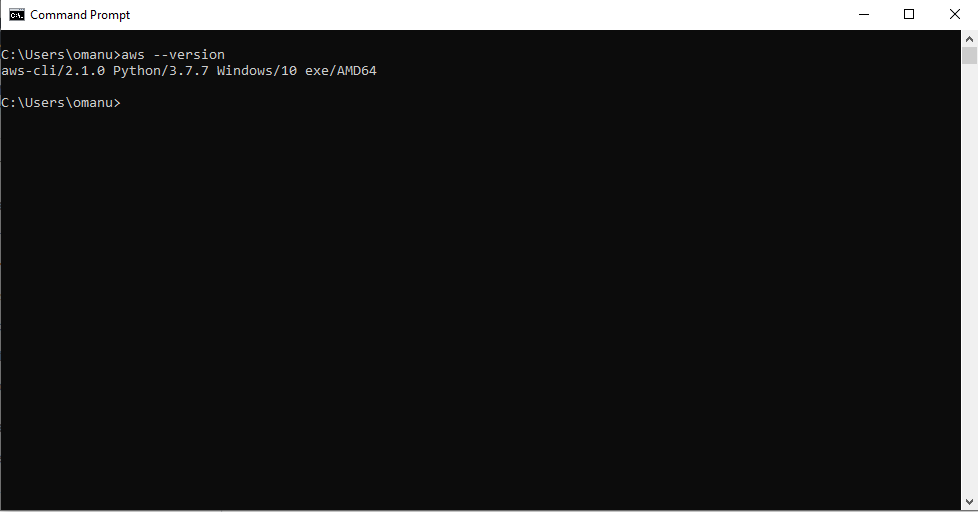ต่อมาให้ config ตาม user admin ที่เราพึ่งสร้างดั่งรูป พิมพ์ aws configure ใส่ ID key และ secret key ตามที่ copy ไว้เลือก region ให้ถูกต้อง และเลือก output format เป็น json ตามรูปด้านล่าง
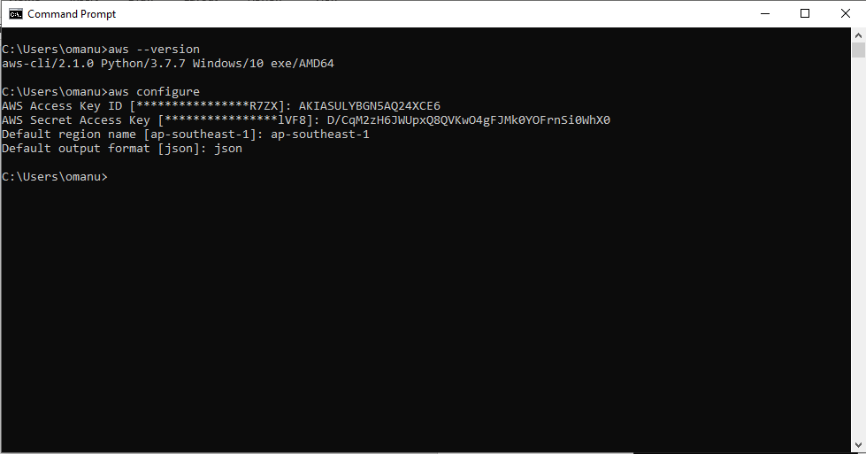จากนั้นพิมพ์
aws lambda add-permission --function-name {Function_name} --principal s3.amazonaws.com --statement-id s3invoke --action "lambda:invokeFunction" --source-arn arn:aws:s3:::{Bucket_name} --source-account {Acount_Number}
ถ้าเรียบร้อยจะขึ้นตามรูปด้านล่าง
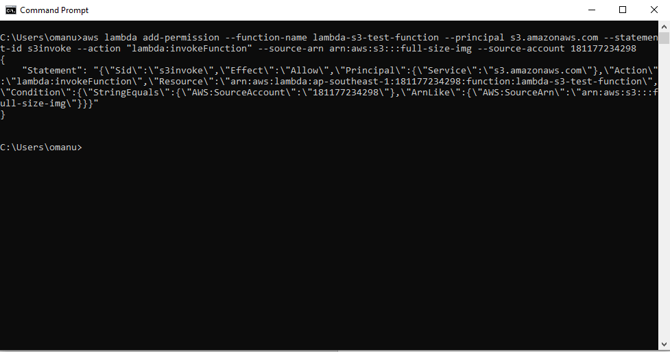ต่อมาให้ download function code ตาม url
https://expert-programming-tutor.com/Downloads/t702/lampbda-s3.zip
จากนั้นให้แตก zip และเข้าไปแก้ไข file index.js ตามชื่อ bucket ของเราตามรูปด้านล่าง
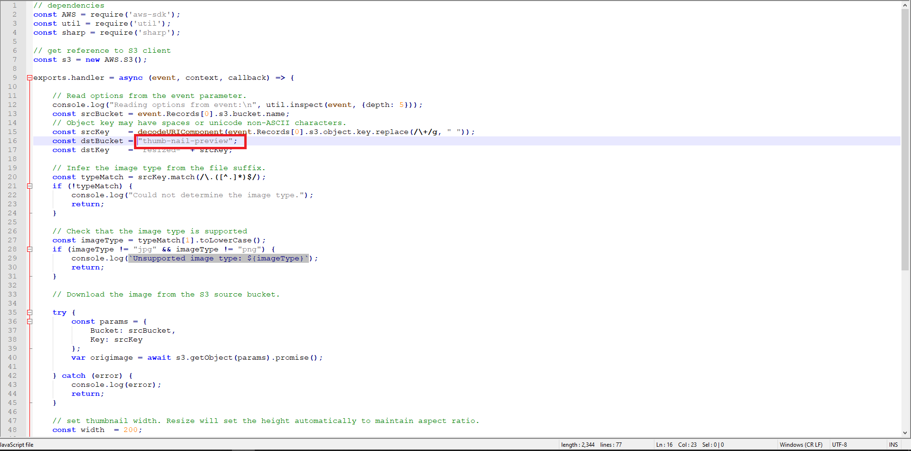จากนั้นให้บีบอัด zip และทำการ upload ไปยัง function ของเรา จากนั้นให้ทำการ log in ด้วย user admin ที่เราสร้างไปที่ S3->{Bucket_name}->properties ให้เลื่อนลงมาจนเจอ Event notification->เลือก create event notification ต่อมาให้ตั้งชื่อ และ check all event types ตามภาพ
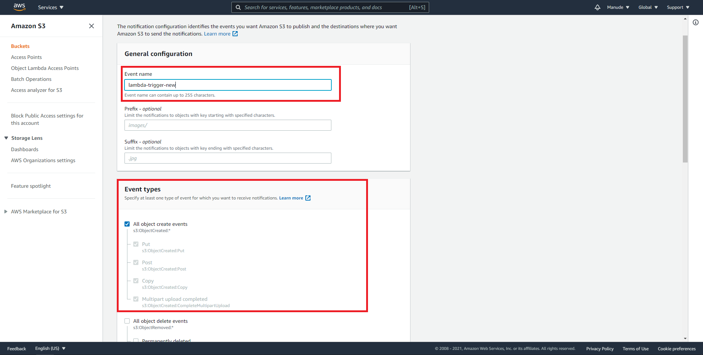ถัดมาเลือก destination เป็น Lambda Function และ เลือก lambda function ที่เราสร้างมาตามภาพ
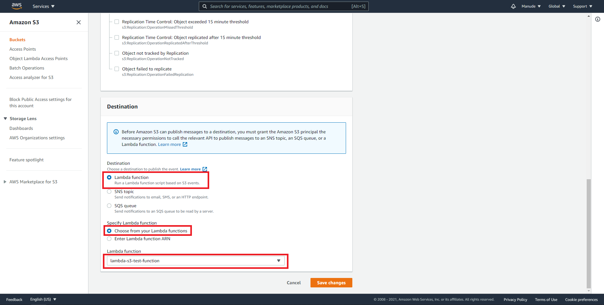เสร็จแล้วให้กด save ที่เราตั้งค่าไปคือการแจ้งเตือนเมื่อมีการ trigger ที่ S3 bucketของเราต่อมาให้กลับไปที่ lambda function ของเราให้เลือก Add Trigger เลือกเป็น S3 ต่อมาเลือก bucket ที่ต้องการตรง Event Type ให้เลือกเป็น All object event จากนั้นให้กด Add
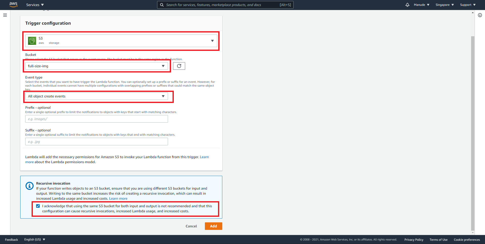จากนั้นให้ไปที่ Bucket ทำการ upload file จากนั้นให้ไปตรวจสอบที่ bucket ของ thumb-nail ว่ามีไฟล์ที่ลดขนาดรูปภาพสร้างไว้หรือยังพร้อมทั้งสังเกตขนาดของรูปด้วย
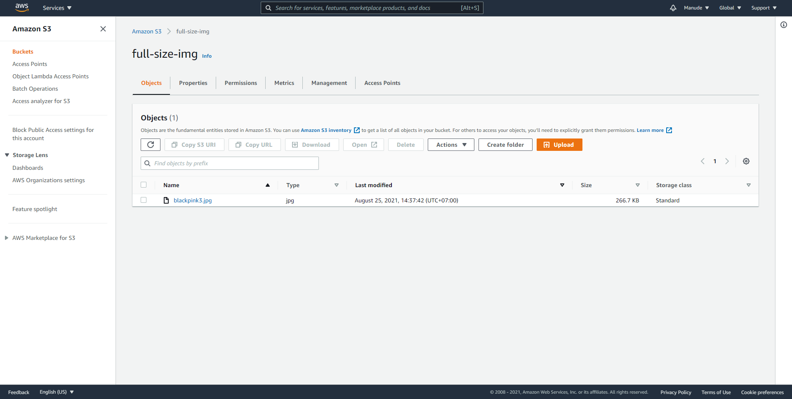ด้านบนคือการทดลอง upload ขึ้นไปที่ Backet full-size-img ส่วนด้านล่างจะเป็นของ thumb-nail จะเห็นว่าขนาดใน bucket thumb-nail เล็กว่า แสดงว่า function lambda ทำงานได้ถูกต้อง
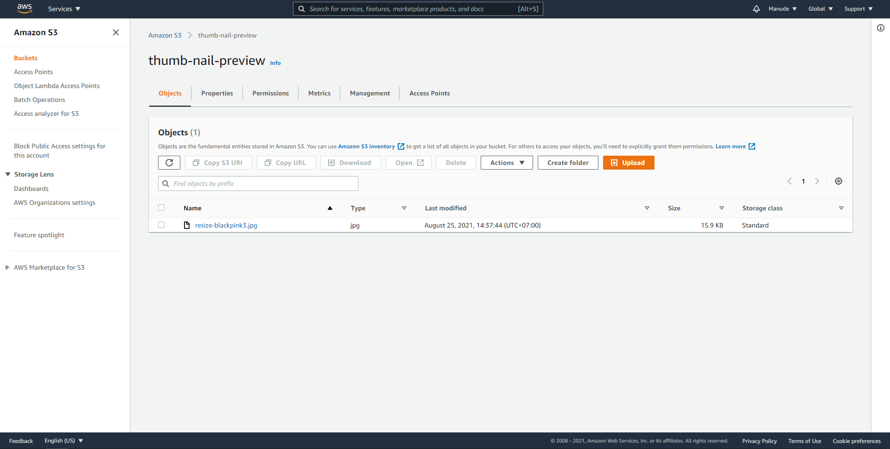